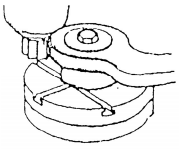
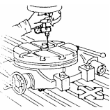

I. Memasang meja putar :
• Pilih dan pasang batang penyetel yang diameternya tepat
masuk ke lubang meja putar
• Bersihkan lubang meja putar dan batang penyetel.
• Pastikan bahwa baut-baut pengikat meja tidak terkunci
keras.
• Naikkan meja sampai batang penyetel masuk lubang
meja putar.

Atau dengan menggunakan dial indicator, sebagai berikut :
• Pasang meja putar ke meja mesin frais.
• Pasang sumbat penyetel di tengah lubang meja putar.
• Pasang dial indicator pada arbor mesin frais dan sentuhkan ujungnya ke sumbat penyetel.
• Putar spindle mesin secara manual dan periksa jarum dial, atur posisi meja putar dengan cara
menggeser posisi meja mesin ke arah memanjang dan melintang.
